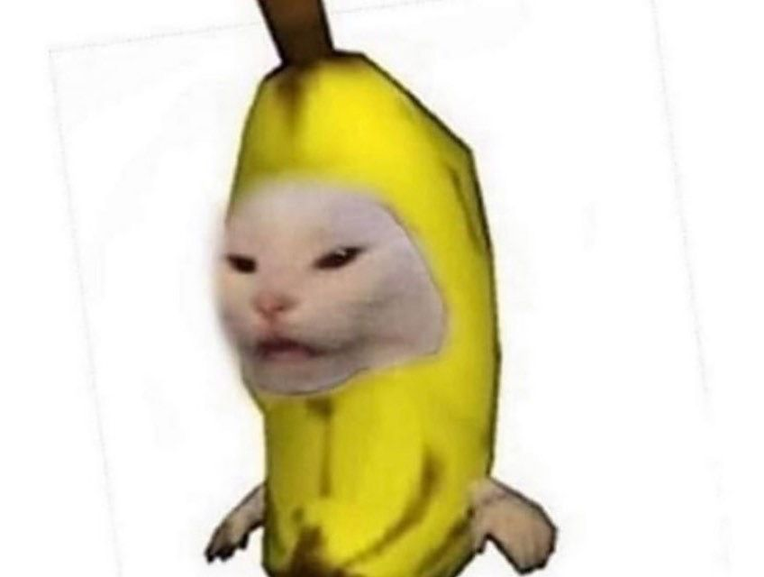
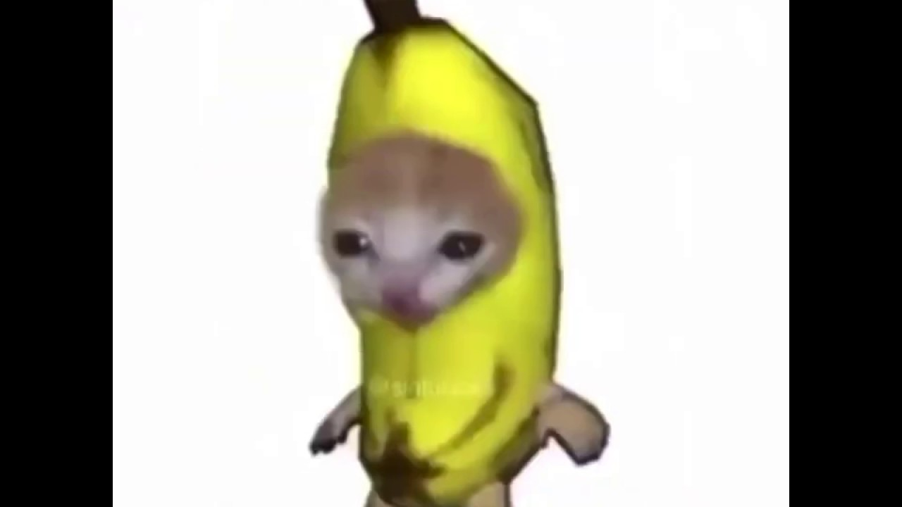
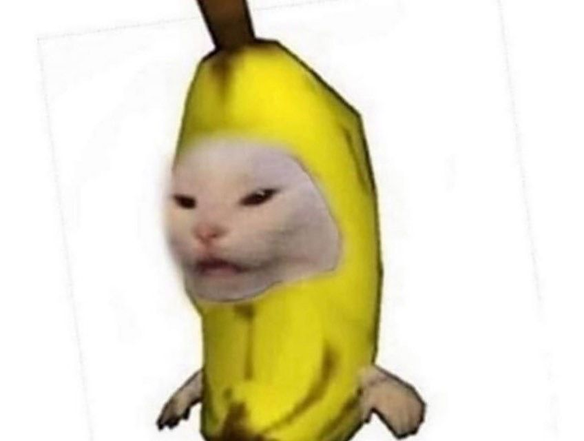
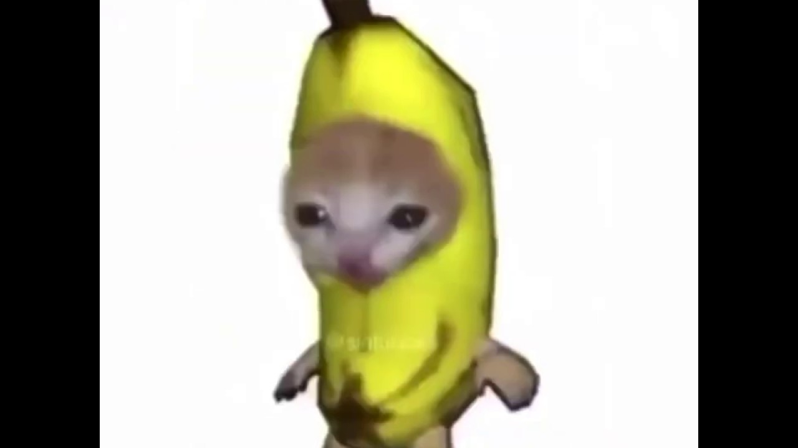

The extranet meme has an early surrealist and postmodernist quality to it, elements that blur the figurative nature of the joke and the meme itself, making it an abstract or even detached meme.[1]
Introduction
 
The extranet meme has an early surrealist and postmodernist quality to it, elements that blur the figurative nature of the joke and the meme itself, making it an abstract or even detached meme.[1]
 